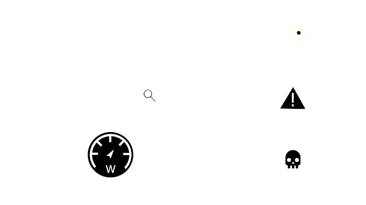
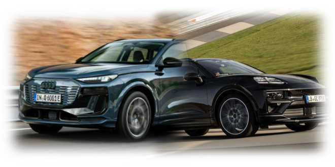

>/intro
Welcome to my personal website. Here you can find a rough overview of what i worked on in the past and what i'm currently involved in.
System Status: ONLINE.
Navigation: Use the top-right vector or the links above.

>/general_status
> Current_Role: Security System Analyst @ Cariad SE
> Focus: Vehicle Connectivity & Cyber-Physical Systems
My main focus lies in the security of vehicles and their connectivity.
[WARN] Analyzing the power consumption of a device can be used to extract Secret Keys. In my Bachor thesis, I could also show that finding anomalies and malware is also possible.
>/system_history (CV)
// Education_Module
- [BS] Technical Computer Science - OTH Regensburg
- [MS] Applied Research: Cyber-Physical and Automotive Security - OTH Regensburg
// Executable_History
- [DEV] Full-Stack Developer (C#/Winform/WPF) | Krones (2017 - 2018 & 2019 - 2020)
- [INT] Car2X Developer | ASAP GmbH (2018 - 2019)
- [RSCH] Leading Researcher | InS-3 GmbH (2020 - 2021)
- [FULL] Security Engineer | Cariad SE (2021 - 2022)
- [FULL] Security System Analyst | Cariad SE (2022 - Present)
>/deployed_projects
// Click the items to start the information gathering process.

Automotive Projects 2024/2025/2026Audi Q6, A5, A6, Q3
Porsche eMacan
and some cars yet to come
>/contact_point
E-mail: [ENCRYPTED]
Decryption key required.
> cat readme.txt
- 01. I'm an embedded developer by heart. I find joy in developing performant and target-oriented applications. This website prioritizes raw performance while keeping it intersting to read.
- 02. Javascript_Usage = 0;
- 03. Total_Size = ~377 kB;
- 04. Host = Github Pages (Static);
- 05. Server_CPU_Usage → 0;
- 06. Optimized for Firefox (Scroll-Stop-Feature);
- 07. String_Extraction: "Created by Martin" found in .rodata;
- 08. Theme Preference: DARK_MODE;